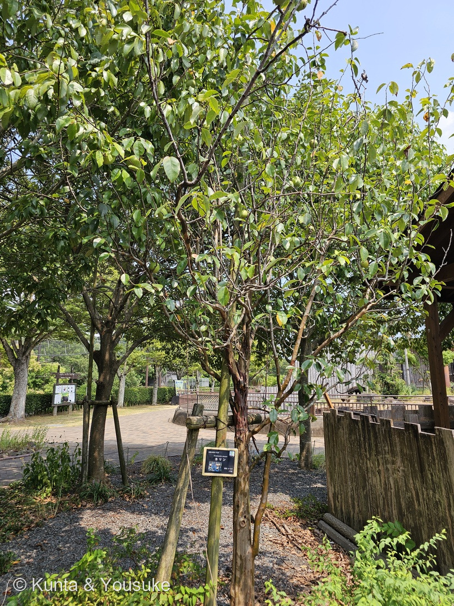
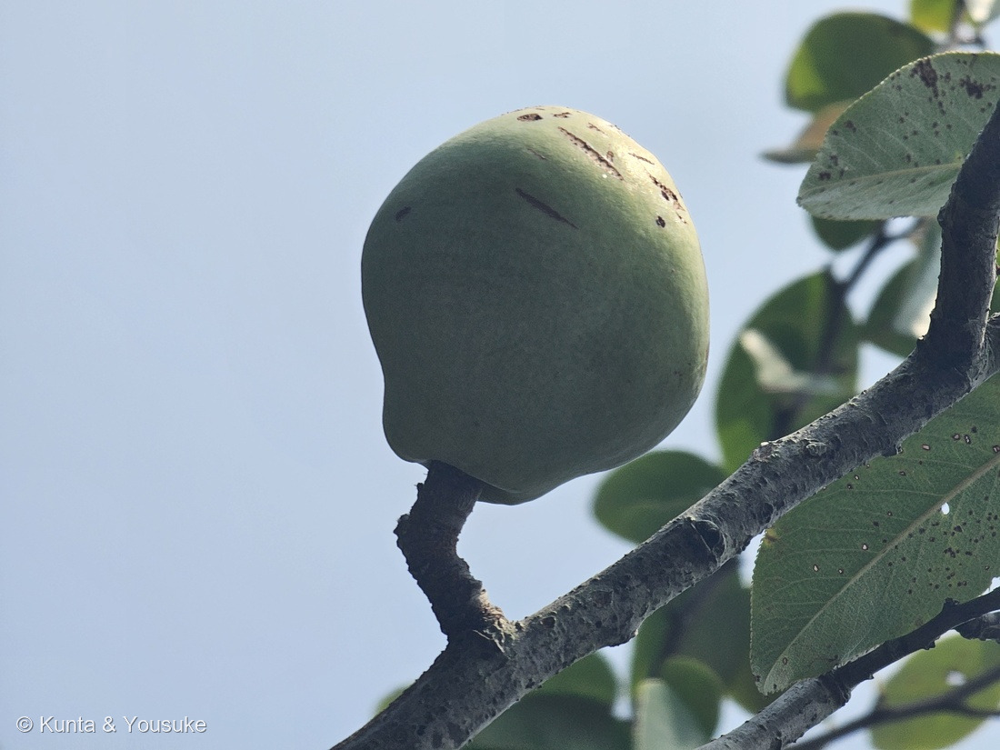
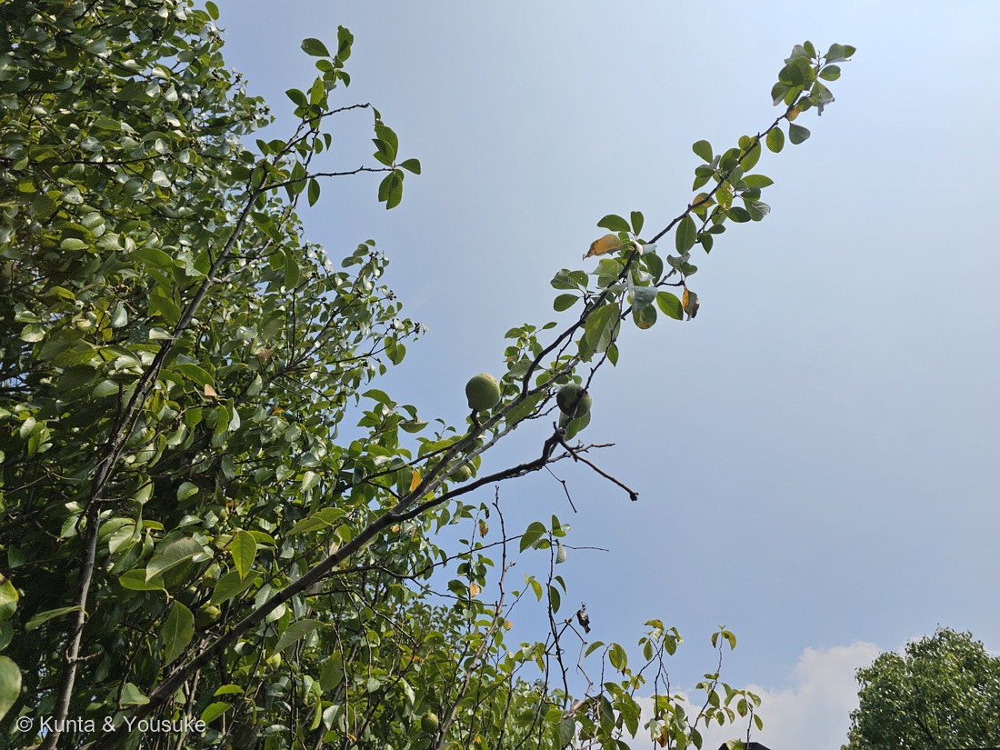
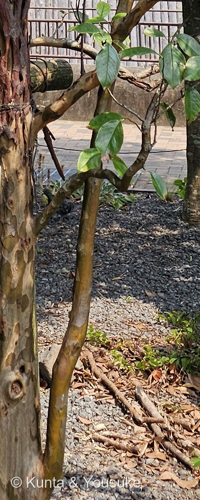

地図を読み込んでいるよ…
🔍 写真も地図も、押しているあいだ拡大して見られるよ（スマホは指を置いてすこし待ってね）。
🌍 の地図＝この子がもともと自生している場所を緑に。中国東部（陝西省・山東省など）。日本では東北地方以南の本州・四国・九州で植栽されているよ。くわしくは下の地図の説明を見てね。
⭐中国東部の木だよ。日本語版Wikipediaは「原産は中国東部で、陝西省、山東省などに分布する」とし、三河の植物観察は「帰化種 中国原産」「中国名は木瓜 mu gua」とする。⚠⚠この地図でいちばん大事なのは「日本が緑じゃないこと」＝日本にいるカリンは、ぜんぶ人が植えたもの――「日本では東北地方以南の本州、四国、九州で植栽されている」（日本語版Wikipedia）。⭐いつ来たのかは、じつは分かっていない＝「日本への伝来時期は不明であるが、江戸時代に中国から渡来したといわれる説もある」（同）。⭐⭐ぼくらが会ったのも長崎の動植物園に植えられた木＝もちろんこの緑の外だよ。⚠省をいくつか塗ったけれど、これは「だいたいこのあたり」という意味＝出典が名指ししているのは陝西省と山東省の2つだけで、あとは「中国東部」という言葉から広げたもの。⭐ちがう読み方をしたので、正直に書いておくね。⭐⭐⭐そして、おまけのマルメロのふるさとは、ここではない＝イラン・トルキスタン原産（同）――⭐そっくりな実をつける二人が、地図では遠く離れているんだ。
⚠ 地図は国（日本と中国だけ県・省）までしか塗れないから、ほんとうの分布より広く見えていることがあるよ。地図はだいたいの場所。正確なところは、上の文を見てね。
カリン（花梨）
Pseudocydonia sinensis (Thouin) C.K.Schneid.
⭐薬用には榠樝（めいさ）／土木瓜（どもっか）／和木瓜（わもっか） ── 中国名は木瓜 ⚠マメ科の「カリン（花梨）」とは和名が同じだけの別種 原産 中国東部
バラ科 · Rosaceae（カリン属 Pseudocydonia・バラ目 Rosales）── ⭐図鑑で6人目のバラ科（024・030・043・139・143）／⭐⭐カリン属ははじめて＝しかも1属1種／⚠科は増えないので101科のまま
燻太さんの一言「のど飴で有名だけど、それ以外の利用方法では食べたことがないかも。実は不揃いのナシのようにも見えるね。バラ科だから、いつかカリンの花も図鑑に登録しよう。」── ⭐⭐⭐⭐三つとも当たっていたよ。とくに「ナシのよう」は、果実の分類名そのものだった
⭐ 名前と学名の由来 ── 木の名前が、よその木からの借りものだった
⭐⭐⭐ この子の名前は、木材の名前を借りてきたものなんだ。
- ⭐⭐日本語版Wikipediaは、こう書いている＝「和名「カリン」は、材の木目が三味線の胴や竿、座卓に使われる唐木の花櫚（読みは「かりん」、花梨とも書く）に似ているので名づけられたもの」。
- ⚠⚠つまり、先に「花櫚」という別の木があった。――⭐そちらはマメ科の木で、日本語版Wikipediaは「マメ科のカリン（花梨）とは和名が同じであるが、全くの別種である」とはっきり書いている。
- ⭐⭐だから、この木の名前は「あの高級な木材に、木目が似ている木」という意味なんだ。⭐実でも花でもなく、切ったときの中身で名づけられている――⭐ちょっとめずらしい名前のつきかただと思う。
- ⭐中国名は「木瓜（mu gua）」（三河の植物観察）。⭐薬にするときは「榠樝（めいさ）」、また「土木瓜（どもっか）」「和木瓜（わもっか）」とも呼ばれる（日本語版Wikipedia）。
- ⭐属名 Pseudocydonia は「にせのキドニア」＝Cydonia（マルメロ属）に似ているけれど、それではない、という意味。⭐⭐つまり属名そのものが「マルメロと間違えないで」と言っているんだ（⭐そのマルメロを、この子のおまけにしたよ）。⭐種小名 sinensis は「中国の」。
⭐⭐ この植物のこと ── 香りと、雲の紋様
- ⭐⭐⭐まず樹皮を見てほしいんだ（写真④）。日本語版Wikipediaは「成木の樹皮はなめらかで、緑色を帯びた茶褐色をしており、不規則に表面が鱗片状に剥がれ落ちた痕が雲紋状となる」とする。⭐写真④が、まさにその「雲紋」だよ。
- ⭐⭐⭐そして、この木のいちばんの取り柄は香りらしい。――「トリテルペン化合物による芳しい香りを放ち、収穫した果実を部屋に置くと部屋じゅうが香りで満たされるほどである」（同）。⭐実ひとつで部屋がいっぱいになる、というのがすごい。
- ⭐実は10〜11月に黄色に熟す＝「長さ10 - 15 cmの楕円形または倒卵形」（同）。⭐ぼくらが会った8月の実は、まだ緑で小さかった。
- ⭐花は3〜5月で「新葉とともに5枚の花弁からなる白や淡紅色の花を枝先に咲かせる」（同）。⭐三河は「花は単生し、直径2.5〜3㎝」「花弁はピンク色を帯び」とする＝⚠1つずつ咲くんだね。
- ⭐ふるさとは中国東部（陝西省・山東省など）。⭐日本へは「江戸時代に中国から渡来したといわれる説もある」（同・⚠伝来時期は不明とされている）。
- ⭐森きららの名札には、右上に「ハーブ」のマークがついていた。――⭐果物としてではなく、薬や香りの草木のなかまとして並べられていたんだね。
⭐ 同定について ── 今回は、写真からも証拠が出た
⭐ 園の名札があるので、これは確認だよ。⚠でも樹木は厳しめに見る約束（087 ヤマモモ）だから、写真からどこまで言えるかを、証拠の強い順に書くね。
- ⭐⭐⭐いちばん強い＝園の名札（「落葉小高木〜高木／Chaenomeles sinensis／カリン／開花：4〜5月／バラ科」）。
- ⭐⭐⭐次に強い＝樹皮の雲紋（写真④）。「不規則に表面が鱗片状に剥がれ落ちた痕が雲紋状となる」（日本語版Wikipedia）＝⭐写真④のとおりで、しかもこれはかなり特徴的な樹皮だよ。⚠087で燻太さんが見つけた「樹皮はたいてい決め手にならない」の、数少ない例外だと思う。
- ⭐⭐その次＝実の形（写真②）。「洋ナシ型で綿毛はなく、表面がつるりとしている」（同）＝⭐⭐これがマルメロを落とす決め手（⚠マルメロは球形で、表面にビロード状の綿毛が密生する）。⭐写真②の実は、上がすぼまって下がふくらみ、表面につやがある。
- ⭐弱い証拠＝葉＝三河は「葉身は長さ5〜8㎝、幅3.5〜5.5㎝の楕円状卵形〜楕円形」「葉縁は芒状〜鋭鋸歯（歯先は腺状）」とする。⚠写真では鋸歯の先が腺かどうかまでは見えなかった。
- ⚠証拠に使わなかったもの＝樹形。⭐この株は支柱つきの株立ちで、人が仕立てた形だから。
⭐⭐⭐⭐ 燻太さんの三つの言葉に、順番に答えるね
⭐⭐⭐ 燻太さんが、こう言ってくれた。
のど飴で有名だけど、それ以外の利用方法では食べたことがないかも。実は不揃いのナシのようにも見えるね。バラ科だから、いつかカリンの花も図鑑に登録しよう。
⭐⭐ 三つとも、まっすぐこの木の芯に当たっていたよ。
⭐⭐⭐ ①「のど飴以外で食べたことがない」── 食べたことがなくて、当たり前だった
- ⭐⭐⭐⭐日本語版Wikipediaは、こう書いている＝「果肉は固く、渋くて石細胞が多いため、生食はできない」。
- ⭐⭐つまりそのままでは食べられない果実なんだ。――⭐だから利用は「カリン酒や砂糖漬け、のど飴などの原料」（同）に限られる。
- ⭐「石細胞」は、ナシを食べたときのあのざらざらと同じもの。⭐ナシでは「おいしさの一部」くらいだけれど、カリンでは多すぎて歯が立たない。
- ⭐⭐そして薬でもある＝「果実は榠樝（めいさ）と称して薬用にする」（同）。⭐のど飴になっているのは、この薬としての顔のほうだね。
- ⭐⭐⭐だから燻太さんの「それ以外の利用方法では食べたことがないかも」は、ほとんどの人がそうなんだ。――⭐生では食べられない木の実に、ぼくらはのど飴という形でだけ会っている。
⭐⭐⭐⭐ ②「不揃いのナシのようにも見える」── 果実の分類名が、そのまま「ナシ状果」
⭐⭐⭐⭐ これがこの回でいちばん驚いたところ。――燻太さんの見立てが、植物学の用語とぴたり同じだったんだ。
- ⭐⭐⭐日本語版Wikipediaは「果実は大型のナシ状果で」と書き、三河も「ナシ状果は芳香があり」と書く。――⭐ナシ状果（pome）は、リンゴ・ナシ・ビワ・カリンなどがつくる果実のタイプの名前だよ。
- ⭐⭐そして「ナシのよう」は形の話でも正しい＝マルメロと分けるときの決め手が、まさに「洋ナシ型」（日本語版Wikipedia）。
- ⭐⭐⭐つまり燻太さんは、果実のタイプと見た目の形の、両方を一言で言い当てていたことになる。
- ⭐「不揃い」というのも当たっていると思う＝⭐写真②③を見ると、ひとつずつ形がちがって、上のすぼまり方も同じではない。⚠畑のナシのようにそろってはいないね。
⭐⭐⭐ ③「いつかカリンの花も登録しよう」── 春の約束にしたよ
- ⭐園の名札が「開花：4〜5月」と書いている。⭐日本語版Wikipediaは3〜5月、三河は4月。
- ⭐⭐見どころは「新葉とともに5枚の花弁からなる白や淡紅色の花」（同）で、⭐三河によれば「単生」＝1つずつ咲く。――⚠139 サクラのように房になって咲くのではないんだね。
- ⭐⭐だから宿題にした。――⭐同じ木にもう一度、春に会いに行く約束だよ。
⭐⭐⭐ 学名の話 ── 三日つづけて、名前が動いた
⚠⚠ 森きららの名札には Chaenomeles sinensis（ボケ属）と書いてある。⭐でも三河の植物観察は、こう両方を並べている。
Pseudocydonia sinensis (Thouin) C.K.Schneid. Chaenomeles sinensis (Thouin) Koehne
⭐⭐⭐ そして日本語版Wikipediaが、その決着を書いていた。
かつてボケ属 Chaenomeles とする説もあったが、ドイツの植物学者カミロ・カール・シュナイダーが1属1種のカリン属 Pseudocydonia を提唱し、分子系統で確認された
- ⭐⭐つまりこの子は、いちど決着している。――⭐「似ているから同じ属」と思われていたのが、DNAを見たら別だった。
- ⭐だから名札の Chaenomeles sinensis は、まちがいというよりその名札が作られたころの学名。⭐この図鑑では、新しいほうの Pseudocydonia sinensis を学名にしたよ。
⭐⭐⭐⭐ 三日で、三つのちがう動きに会った
⭐⭐ おかしなことに、この三日で登録した木は、三つとも学名が動いている。しかも動き方が全部ちがうんだ。
- ⭐253 ビロウ（8/17）＝独立した種 → 変種 → 本家と同じもの＝⭐名前が降りていった（⚠しかも、まだ決着していない）。
- ⭐254 タビビトノキ（8/18）＝1属1種だったのが、2021年に6種に増えた（⚠その株がどれかは決まらない）。
- ⭐この子（8/18）＝似ている属に入れられていたのが、DNAで別だと分かって、1属1種になった＝⭐⭐三つのなかで、これだけ決着している。
⭐⭐⭐ 減る・増える・決まる。――⭐名前って、じっとしていないんだなあと思う。⭐⭐そして、この子だけが「もう答えが出ている」というのが、なんだかほっとするよ。
出典：九十九島動植物園 森きららの園名札（「落葉小高木〜高木／Chaenomeles sinensis／カリン／開花：4〜5月／バラ科」と「ハーブ」の分類マーク。⚠名札を主役にしたアップは公開していないよ）／日本語版Wikipedia「カリン（バラ科）」（学名の決着＝シュナイダーが1属1種のカリン属を提唱し分子系統で確認されたこと・和名が唐木の花櫚に由来すること・マメ科のカリンとは別種であること・原産と日本での植栽・江戸時代渡来説・樹皮が雲紋状になること・花期と花の色・ナシ状果と大きさと熟期・トリテルペンの香り・石細胞が多く生食できないこと・カリン酒や砂糖漬けやのど飴・薬用名 榠樝／土木瓜／和木瓜・マルメロとの見分け）／三河の植物観察「カリン」（Pseudocydonia と Chaenomeles の両方の学名・中国原産で中国名は木瓜・小枝と皮目・葉身と葉縁と葉柄と托葉・花期4月と花の直径と花弁の色・ナシ状果の色と大きさと果期）